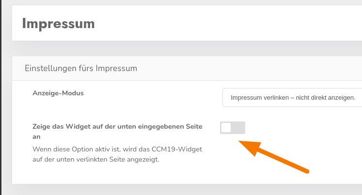

Wenn das CCM19-Banner nur auf diesen Seiten nicht angezeigt wird, liegt das an einer Ausnahmeregel, die standardmäßig für die URLs gilt, die Sie in CCM19 bei den Punkten "Impressum" und "Datenschutz" eingetragen haben.
Sie können diese Ausnahme über eine Einstellung deaktivieren:

Da die Seiten "Impressum" und "Datenschutz" im Banner verlinkt sind und wichtige Informationen beinhalten, die den Besucher in seiner Entscheidung beeinflussen könnten, ob er die Cookies akzeptiert oder lieber nicht, ist die Option zur Anzeige standardmäßig deaktiviert.